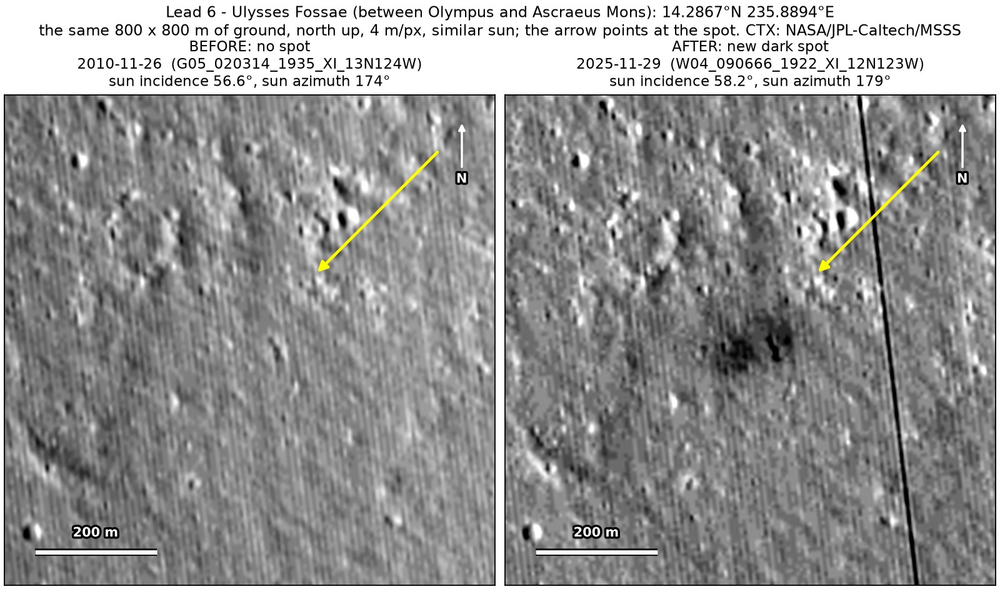
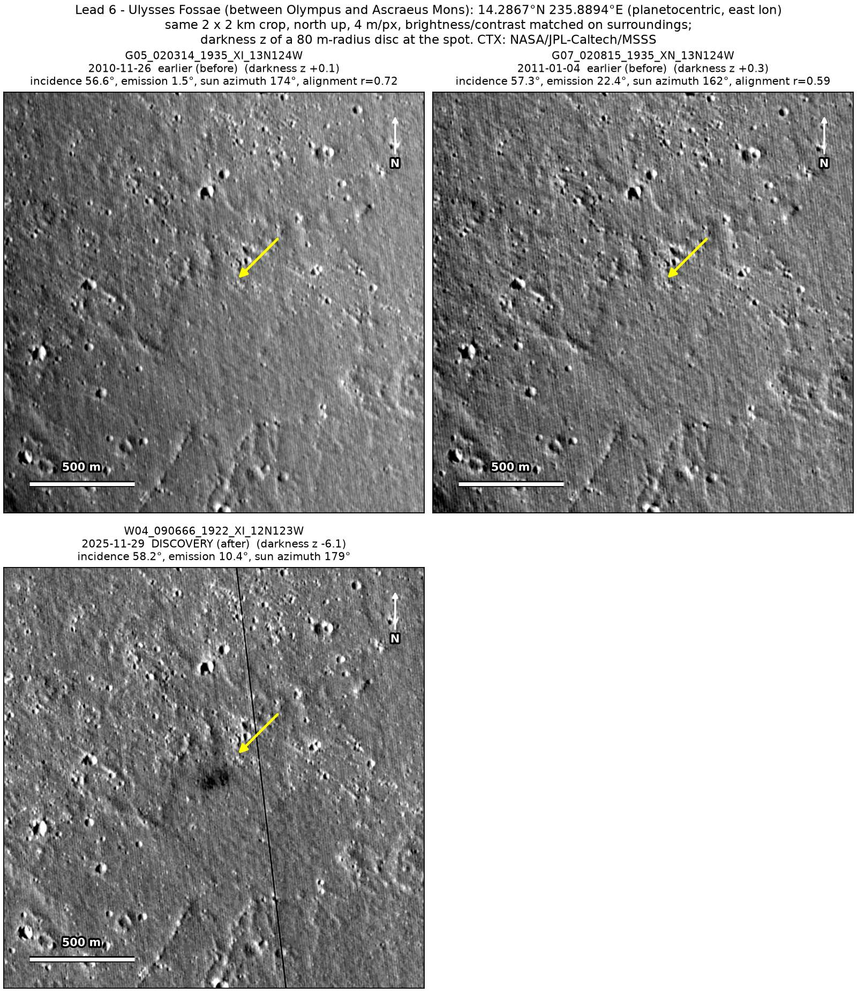
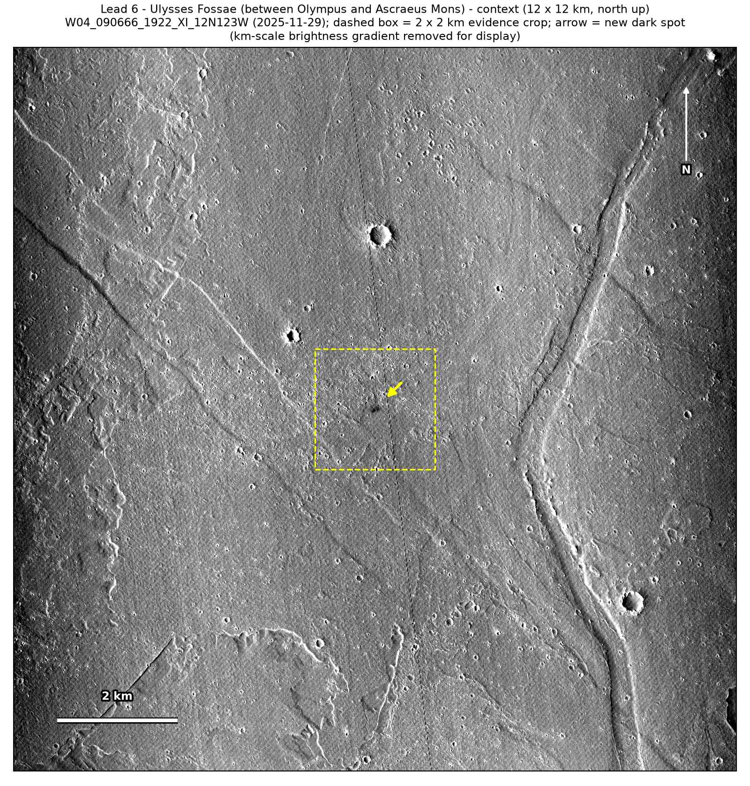

Professor of Mathematics
Paata Ivanisvili
Department of Mathematics, University of California, Irvine

← Possible new impact sites on Mars
Candidate 11: Lava plains of Ulysses Fossae, between Olympus Mons and Ascraeus Mons
Promising · roughly 55%

What changed. A diffuse dark patch 100 to 150 m across, with two or three darker blobs inside, appeared on these heavily dust-covered lava plains some time in the last 15 years.
Why it may be a new impact. Two earlier images taken under the same sun show nothing at the spot.
- Location
- 14.287° N, 235.889° E (124.111° W)
- Absent
- 26 November 2010 and 4 January 2011
- Present
- 29 November 2025
- Size
- Diffuse dark patch 100 to 150 m across, with two or three darker blobs inside
- Confidence
- Promising; roughly 55% that it is a new impact.
- Caveat
- Only one image shows it so far, so it is rated promising rather than strong. It lies outside every footprint of the high-resolution HiRISE camera. Like every candidate here, it is unconfirmed: see the caveat.

